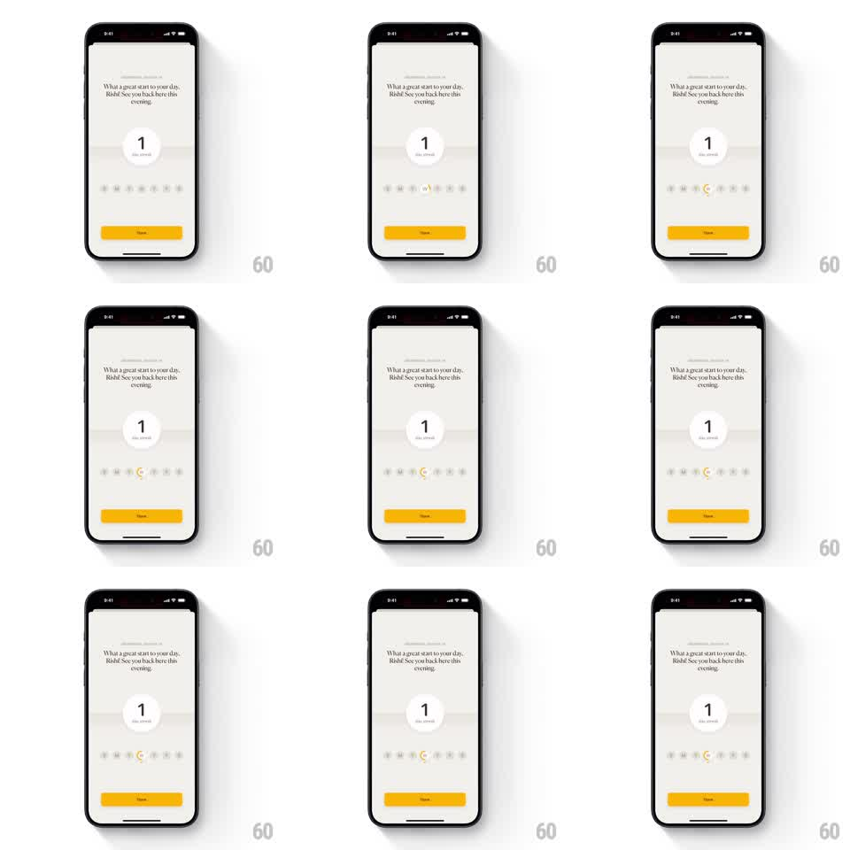

Media
Frame-by-frame

Rebuild this interaction 1:1: Spoil Me's streak screen - a calm gray streak card where the current day dot in the week row bounces springily as it lands on today.

Rebuild this interaction 1:1: Spoil Me's streak screen - a calm gray streak card where the current day dot in the week row bounces springily as it lands on today. ## Integration Integration: stack-agnostic spec - springs given as stiffness/damping, timed motions as duration + curve; map every value to your framework and animation library of choice. ## Scene Light gray screen. Top: a "STREAK FREEZE 2x" chip. Message: "What a great start to your day, Rishi! See you back here this evening." Center: a large white circle holding "1" over "day streak". Below: a row of seven day dots for the week - past days filled gray, today an accent dot, future days outlined. Bottom: a solid yellow CTA pill. ## Motion spec Pattern: calendar-day bounce landing. - On screen entry, elements cascade: message fades in (300ms), the streak circle scales from 0.9 to 1.0 (spring ~280/22), the day row fades up (250ms). - The today indicator animates across the row: starting from the last filled day, the accent dot hops to today's position - a small arc (translateX to the slot, translateY up ~10px mid-flight) landing with a springy bounce (stiffness ~400, damping ~18, one visible overshoot). - On landing, the dot pulses once (scale 1.0 to 1.3 to 1.0, 300ms) and the streak number ticks up with a flip (rotateX 90deg swap, 250ms). - Idle: today's dot breathes gently (scale 1.0 to 1.06, 2s sine). ## Calibration - The hop arc is small and quick (~400ms); a big jump turns a reward into a cartoon. - Only today gets the accent color - the rest of the row stays grayscale. ## Reduced motion Dot fades into today's slot; number swaps without flip. ## Don't miss - The week row mixes three states (filled past, accent today, outlined future) - the contrast carries the progress story. - The yellow CTA is the only saturated element besides today's dot.